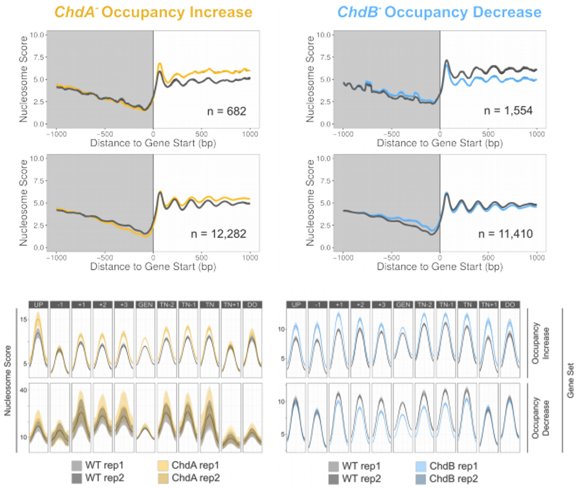
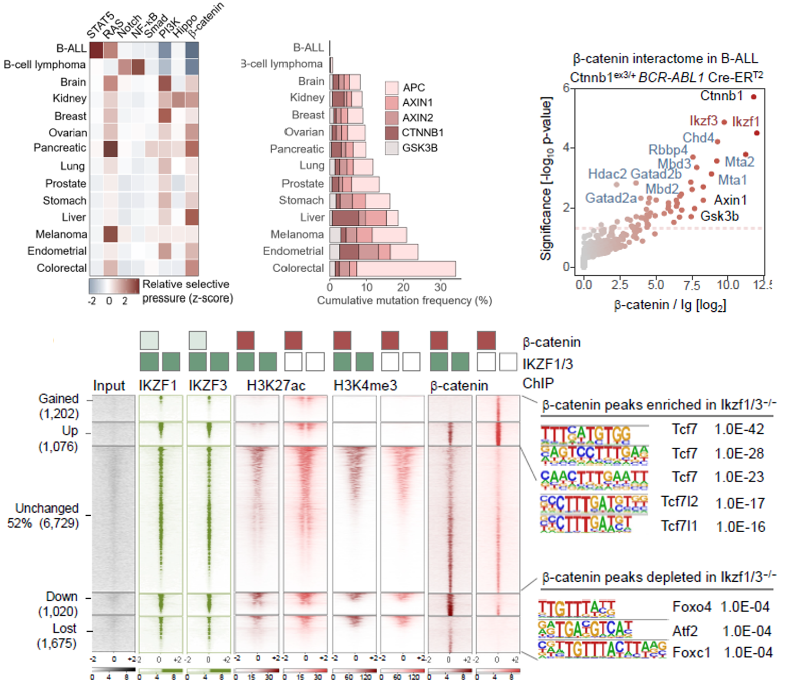
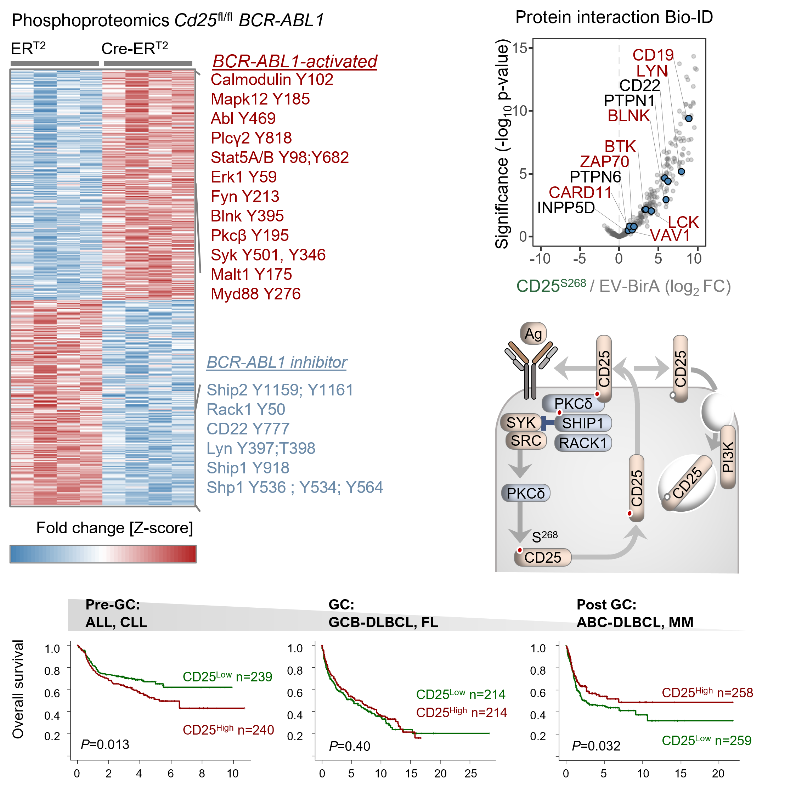
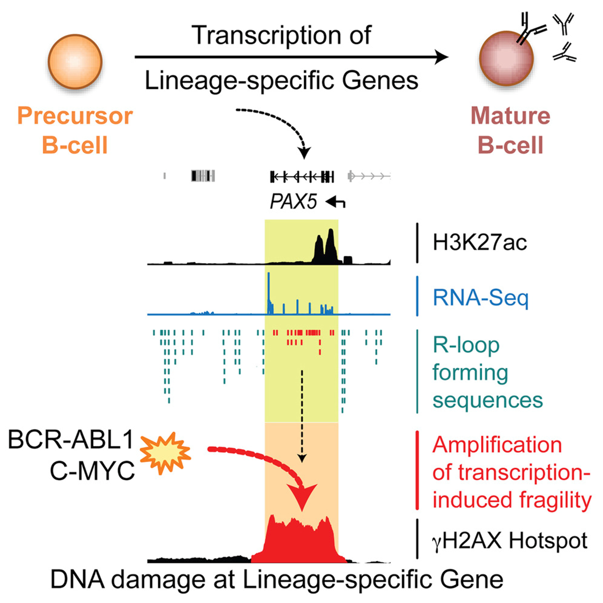
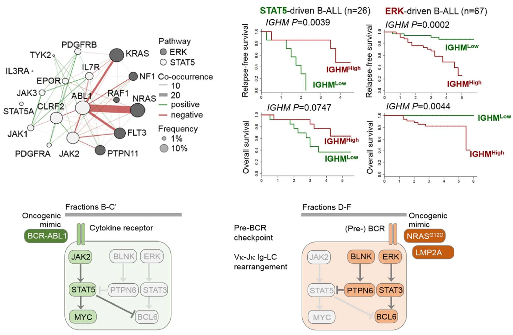

About me
As dual wet- and dry-lab scientist during my PhD I established a panel of chromatin-remodeler mutants in the developmental model Dictyostelium, performed MNAse-digest sequencing, and developed a novel nucleosome mapping alogithm and visualisation toolset in order to understand the roles of chromatin remodelers in controlling developmental expression programs through nucleosome positioning.
Following my PhD I moved to the lab of Dr. Feldhahn at Imperial College London to gain experience in computational haematology-oncology research. Our work mapping DNA-damage and enhancer reprogramming in transformed B-cells helped to explain why lineage specific markers are recurrently mutated in B-cell acute lymphoblastic leukemia (B-ALL).
In 2019 I joined the lab of Dr.Müschen, working together with bench scientists to identify novel therapeutic vulnerabilities of B-cell malignancies. Through integrative analysis of clinical, transcriptional, proteomic and phosphoproteomics data in leukemia & lymphoma I helped uncover an unexpected mechanism of lipid-raft formation leading to PI3K amplification loop downstream of the B-cell receptor. Working with Dr. Chan, my identification of mutational segregation between patient cohorts with STAT5- and ERK-pathway driven B-ALL helped lead to the concept of oncogene convergence. This work showed that convergence on a single oncogenic driver was essential for development of B-ALL, and that activation of divergent pathways subverts oncogenesis. This convergence theory gives rise to the exciting possibility of synergistically combining divergent pathway activation with principal driver inhibition as a novel therapeutic strategy. By extending this analysis to study all major oncogenic pathways pan-cancer I now hope to identify whether oncogenic convergence is unique to B-ALL, or whether it represents a new hallmark of cancer that can be exploited to design combination therapies.
Müschen lab - Yale University
Ifitm3 as a scaffold for lipid raft formation and PI3K signaling
downstream of the B-cell receptor
Mutual exclusivity of pathway activating variants in developmental
subtypes of B-ALL
Interaction between Ikaros and B-catenin leads to Myc repression
and cell death in normal and malignant B-cells
IL2-independent role of CD25 in negative feedback regulation of
B-cell receptor signaling
Lab wesbite
Feldhahn lab - Imperial College London
Lineage-specific transcriptional programs drive DNA damage and help explain
accumulation of alterations in lineage-related proteins
Chromatin conformation mapping in high risk MECOM-positive AML patients to
identify potential crytpic oncogenic enhancers. in preparation
Single-cell profiling of human bone marrow progenitors reveals mechanisms of failing erythropoiesis in Diamond-Blackfan anemia
Brd2/4 and Myc regulate alternative cell lineage programmes during early osteoclast differentiation in vitro
Lab wesbite
PhD Molecular Biology - Cardiff University
APPS
Interacting with, and exploring data is essential to understanding it, therefore to communicate data insights to wet-lab scientists I have created a suite of apps to facilitate direct interaction with their results, as well as perform simple analyses.


RESEARCH & SKILLS
Disecting the distinct roles of chromatin remodelers in establishing and maintaining nucleosome positioning and transcriptonal outcomes
SUMMARY: Chromatin remodeling complexes establish nucleosome occupancy, positioning and structure in a dynamic fashion to allow fine-tuning of protein-DNA interactions. The ISWI and CHD families of remodelers possess the ability to sample DNA linker length between nucleosomes and space nucleosomes evenly in an array. To examine the distinct roles of CHD and ISWI family proteins in the model organism Dictyostelium discoideum I developed a panel of single and double remodeler knock-out lines and performed MNase-seq, RNA-seq and functional assays. In depth analysis of nucelosome characteristics were disected by development of a novel bioinformatic algorithm for improved nucleosome positioning quantification and vizualisation.
COMPUTATIONAL: Algorithm development, R package development, peak calling, differential expression, nucleosome positioning, NGS raw read processing, R, Python, Perl
MOLECULAR: Cloning, cell culture, RNA-seq, MNAse-seq, Ion-Torrent & Illumina sequencing
Targeted engagement of β-catenin-Ikaros complexes in refractory B-cell malignancies
SUMMARY: In most cell types, nuclear β-catenin functions as prominent oncogenic driver and pairs with TCF7-family factors for transcriptional activation of MYC. Surprisingly, B-lymphoid malignancies not only lacked expression and activating lesions of β-catenin but critically depended on GSK3β for effective β-catenin degradation. Our interactome studies in B-lymphoid tumors revealed that β-catenin formed repressive complexes with lymphoid-specific Ikaros factors. Instead of MYC-activation, β-catenin was essential to enable Ikaros-mediated recruitment of nucleosome remodeling and deacetylation (NuRD) complexes for transcriptional repression of MYC.Preclinical in vivo treatment experiments in patient-derived xenografts validated small molecule GSK3β-inhibitors for targeted engagement of lymphoid-specific β-catenin-Ikaros complexes as a novel strategy to overcome conventional mechanisms of drug-resistance in refractory malignancies.
Pre-printCOMPUTATIONAL: Proteomics protein-interactions, HiChIP chromatin interactions, whole-exome variant calling, RNAseq, ChIPseq, evolutionary pressure modeling, dose response
Dynamic phosphatase-recruitment controls B-cell selection and oncogenic signaling
SUMMARY: Initiation of B-cell receptor (BCR) signaling in normal B-cells, and oncogenic signaling in B-cell leukemia (B-ALL) and lymphoma both induce high CD25-surface expression. While CD25 is known as an IL2-receptor chain on T- and NK-cells, the significance of its expression on B-cells was unclear. Our experiments revealed that, rather than functioning as an IL2-receptor chain, CD25 expressed on B-cells assembled an inhibitory complex including PKCδ and SHIP1 and SHP1 phosphatases for feedback control of BCR-signaling or its oncogenic mimics. Clinical outcome analysis demonstrated opposite prognostic effects of CD25 in pre- and post-germinal center malignancies. Proteomic and phospho-proteomic interactome studies revealed a critical role of CD25 in BCR-feedback regulation: BCR-signaling induced PKCδ-mediated phosphorylation of CD25 on its cytoplasmic tail (S268). These findings highlight the previously unrecognized role of CD25 in assembling inhibitory phosphatases to control oncogenic signaling in B-cell malignancies and negative selection to prevent autoimmune disease.
Pre-printCOMPUTATIONAL: Phospho-proteomics, proteomics protein-interactions, RNAseq, ChIPseq
MOLECULAR: Tonsilar B-cell isolation & transduction, DLBCL model development, FACS
Lineage-Specific Genes Are Prominent DNA Damage Hotspots during Leukemic Transformation of B Cell Precursors
SUMMARY: In human leukemia, lineage-specific genes represent predominant targets of deletion, with lymphoid-specific genes frequently affected in lymphoid leukemia and myeloid-specific genes in myeloid leukemia. To investigate the basis of lineage-specific alterations, we analyzed global DNA damage in primary B cell precursors expressing leukemia-inducing oncogenes by ChIP-seq. We identified more than 1,000 DNA-damage hotspots, of which B lineage-specific genes constitute the most prominent targets. We demonstrate that lineage-specific transcription predisposes lineage-specific genes in transformed B cell precursors to DNA damage, which is likely to promote the frequent alteration of lineage-specific genes in human leukemia.
COMPUTATIONAL: Differential binding, peak calling, differential expression, genomic sequence analysis, feature annotation, feature enrichment, gene set enrichment, R, Python
Signalling input from divergent pathways subverts B cell transformation
SUMMARY: STAT5- and ERK-pathway activating mutations are common in B-cell acute leukemia (B-ALL), and drive proliferation and tumorigenesis. Suprsingly, using mutual exclusivity analysis we found that rather than co-operating to drive leukemogenesis, alterations in STAT5- and ERK-pathways segregated into distinct patient cohorts with significantly less co-occurrence than expected. Experimental follow-up with single-cell western blot found that in fact, even in the few patient cases exhibiting variant co-occurrence there was segregation into distinct patient cohorts. Furthermore, forced activation of both pathways simultaneosly caused senescence and cell death in vitro, and pharmacological reactivation of the secondary pathway synergized with primary pathway inhibition in vivo to reduce tumor burden and prolong survival.
Nature 583.7818 (2020): 845-851COMPUTATIONAL: Patient survival, variant calling & filtering, pathway alteration co-occurrence
Brd2/4 and Myc regulate alternative cell lineage programmes during early osteoclast differentiation in vitro

SUMMARY: Osteoclast (OC) development in response to nuclear factor kappa-Β ligand (RANKL) is critical for bone homeostasis in health and in disease. Here, we demonstrate that in response to RANKL, early OC development entails regulation of two alternative cell fate transcriptional programmes, OC vs macrophage. Both programmes are regulated in a non-redundant manner by increased chromatin binding of Brd2 at promoters and of Brd4 at enhancers/super-enhancers. Myc, the top RANKL-induced TF, regulates OC development in co-operation with Brd2/4 and Max and by establishing negative and positive regulatory loops with other lineage-affiliated TFs. These insights into the transcriptional regulation of osteoclastogenesis suggest the clinical potential of selective targeting of Brd2/4 to abrogate pathological OC activation.
IScience 24.1 (2021): 101989COMPUTATIONAL: Differential accessibility, TF-footprinting, gene-regulatory network inference, RNA-seq timecourse analysis, super-enhancers